トルコ 観光スポット
カテゴリー
エリア
イスタンブール
ヨーロッパとアジアの境に立つ旧都。ビザンツ・オスマン両帝国の遺産が旧市街に凝縮し、バザールの喧騒とボスポラスの潮風が同居する
アクセス
イスタンブール空港から市内まで空港シャトル・地下鉄で約1時間
おすすめ時期
4〜6月・9〜10月
宿泊エリア
スルタンアフメット / ベイオール / カドキョイ

⭐
IST 02
ブルーモスク（スルタンアフメト・モスク）
現役の礼拝所内壁を彩る青いイズニックタイルからその名がついた、6本のミナレットを持つ壮麗なモスク。現役の礼拝所でもある。
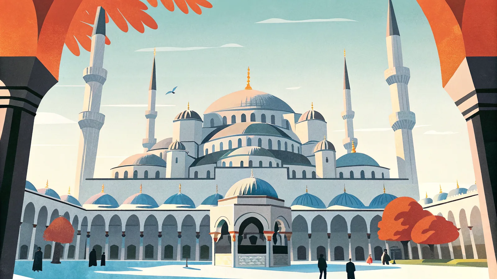
Googleマップ →⭐
IST 03
トプカプ宮殿
オスマン帝国の宮殿オスマン帝国のスルタンが約400年暮らした宮殿。宝物館の巨大ダイヤモンドやハーレムの装飾は必見の見どころ。
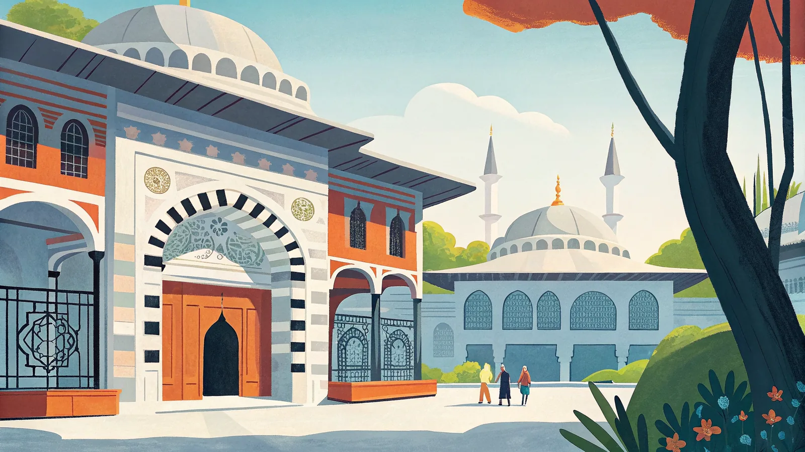
Googleマップ →IST 04
グランドバザール
世界最大級の市場4000店以上がひしめく世界最大級の屋根付き市場。絨毯・貴金属・陶器など見て回るだけでも数時間かかる迷宮。
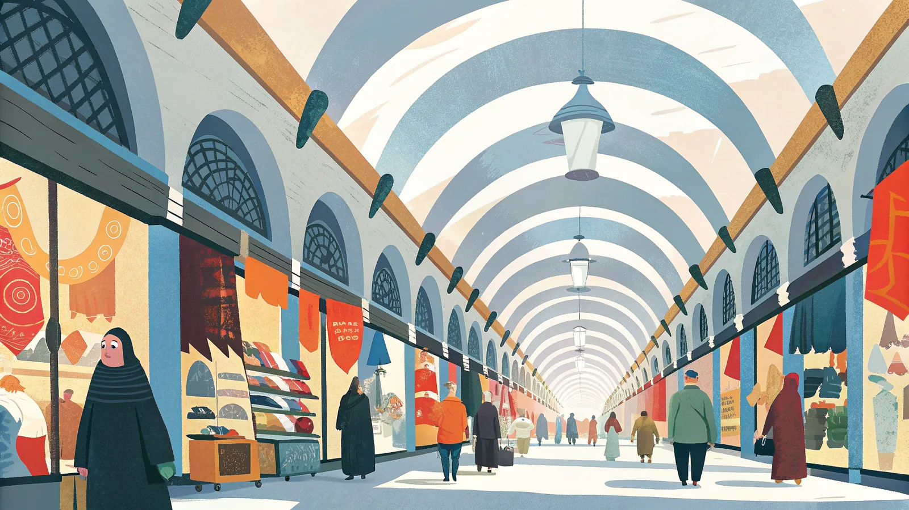
Googleマップ →IST 05
ボスポラス海峡クルーズ
海峡クルーズヨーロッパとアジアを分かつ海峡を船で行き来するクルーズ。海上から眺めるオスマン建築の宮殿群は格別の景色。
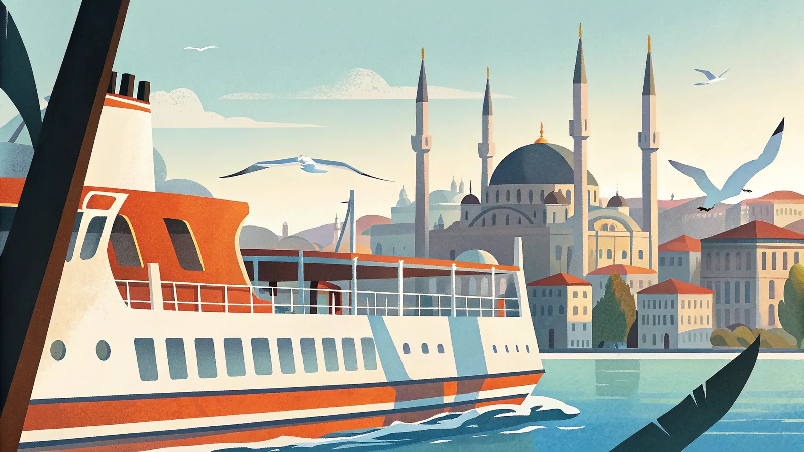
Googleマップ →IST 07
バシリカ・シスタン（地下宮殿）
幻想的な地下貯水槽ビザンツ帝国時代の巨大な地下貯水槽。336本の円柱が薄暗い水面に映り込む幻想的な空間で、メデューサの顔の柱台も見どころ。
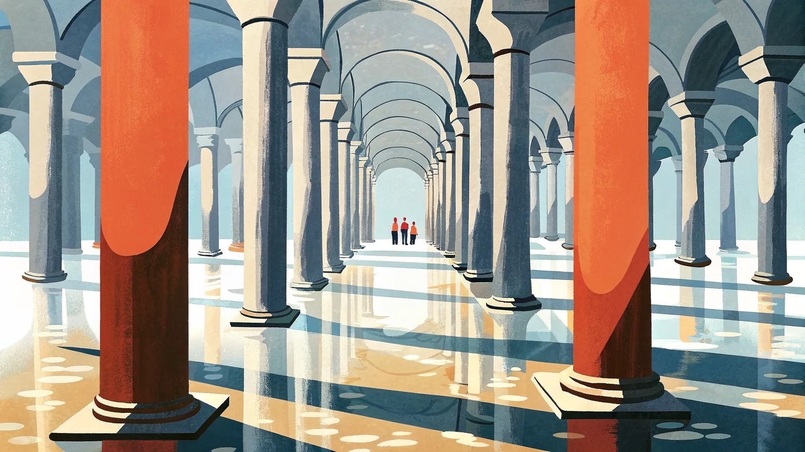
Googleマップ →IST 08
エジプシャンバザール（スパイスバザール）
香り立つ香辛料市場17世紀創建のL字型市場。色とりどりのスパイスやトルコ菓子、ドライフルーツが山積みにされ、香りに包まれながら歩くだけでも楽しい。
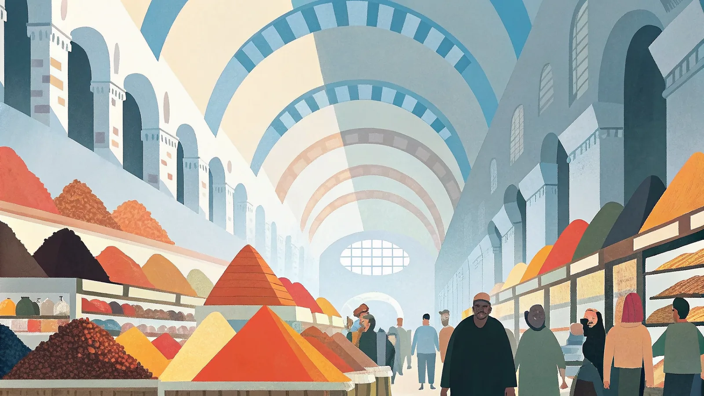
Googleマップ →カッパドキア
奇岩「妖精の煙突」が連なる大地に、早朝の熱気球が数十機も浮かぶ幻想的な光景が広がる。洞窟をくり抜いたホテルも名物
アクセス
イスタンブールから国内線でカイセリ／ネヴシェヒル空港まで約1.5時間
おすすめ時期
4〜6月・9〜10月
宿泊エリア
ギョレメ（洞窟ホテルが集まる中心地）

CAP 04
ウフララ渓谷
渓谷ハイキング深く切れ込んだ緑豊かな渓谷をハイキングできる自然スポット。岩壁に刻まれた教会跡も点在し、気球観光とは違う静けさが魅力。
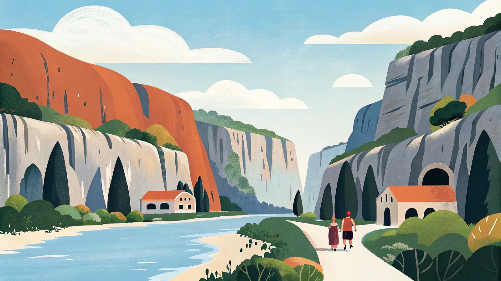
Googleマップ →パムッカレ
石灰岩が幾重にも段を成す真っ白な棚田状の温泉。丘の上には古代都市ヒエラポリスの遺跡が広がる、二重の世界遺産地帯
アクセス
イスタンブールから国内線でデニズリ空港まで約1.5時間、空港から車で約1時間
おすすめ時期
4〜6月・9〜10月
宿泊エリア
パムッカレ村（丘のふもとが便利）
⭐
PAM 01
パムッカレ石灰棚
世界遺産「綿の城」を意味する名の通り、石灰華が段々畑状に広がる真っ白な絶景。温泉水を湛えた棚田を素足で歩いて楽しむ。
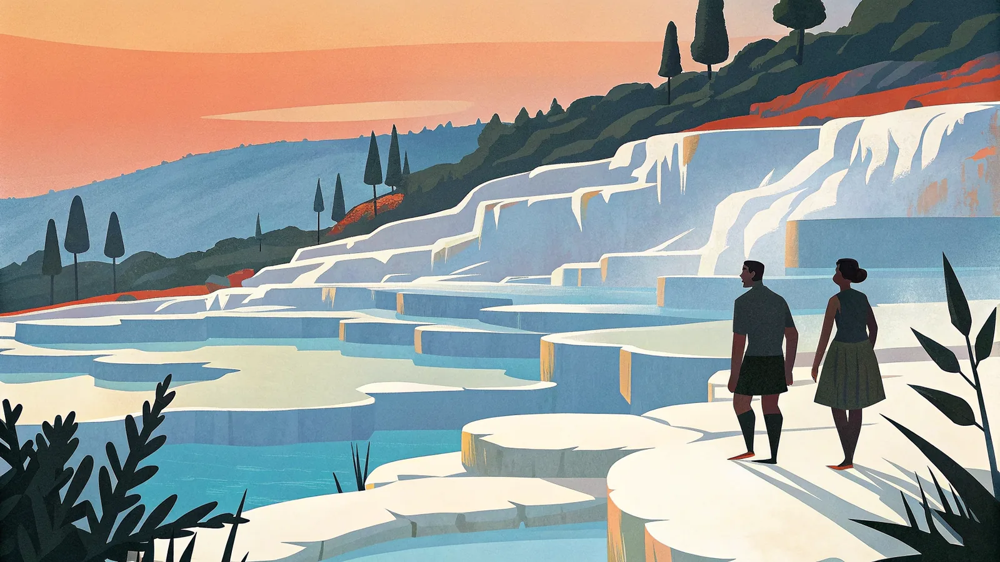
Googleマップ →PAM 02
ヒエラポリス古代都市
世界遺産丘の上に広がる古代ローマの温泉保養都市跡。大劇場や墓地遺跡、コロナード通りが残り、往時の繁栄を今に伝えている。
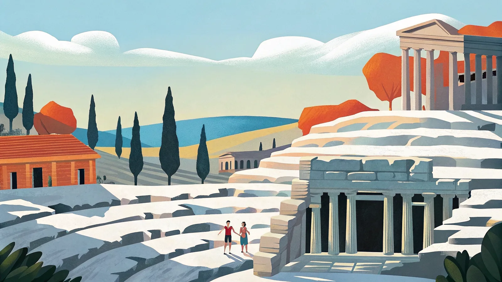
Googleマップ →PAM 03
クレオパトラ・プール
古代遺構の温泉プール古代の柱が沈む温泉プールで泳げる珍しいスポット。伝説ではクレオパトラも入浴したとされ、有料だが人気が高い。
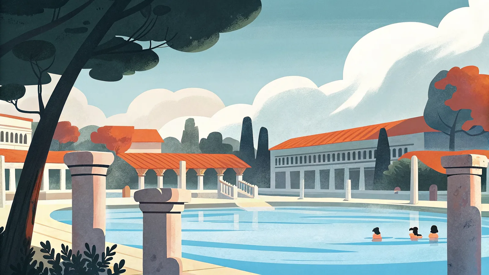
Googleマップ →アンタルヤ
地中海に面したトルコ屈指のリゾート都市。旧市街カレイチの石畳と、透明度の高いビーチが徒歩圏に共存する
アクセス
イスタンブールから国内線でアンタルヤ空港まで約1.5時間
おすすめ時期
4〜6月・9〜10月
宿泊エリア
カレイチ旧市街 / コンヤアルトゥ
ANT 03
コンヤアルトゥ・ビーチ
市街地から徒歩圏市街地から徒歩圏の砂利ビーチ。背後にタウルス山脈がそびえる眺めが特徴的で、地中海リゾート気分を手軽に味わえる。
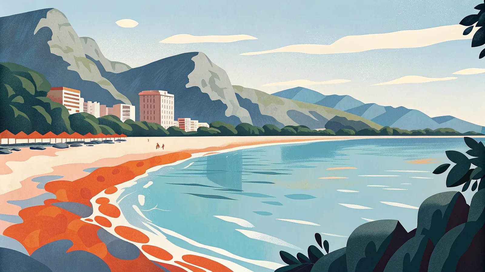
Googleマップ →ANT 04
アスペンドス古代劇場
保存状態随一の古代劇場現存する古代ローマ劇場の中でも保存状態が随一とされる遺跡。今も夏には音楽祭やオペラの舞台として使われている。
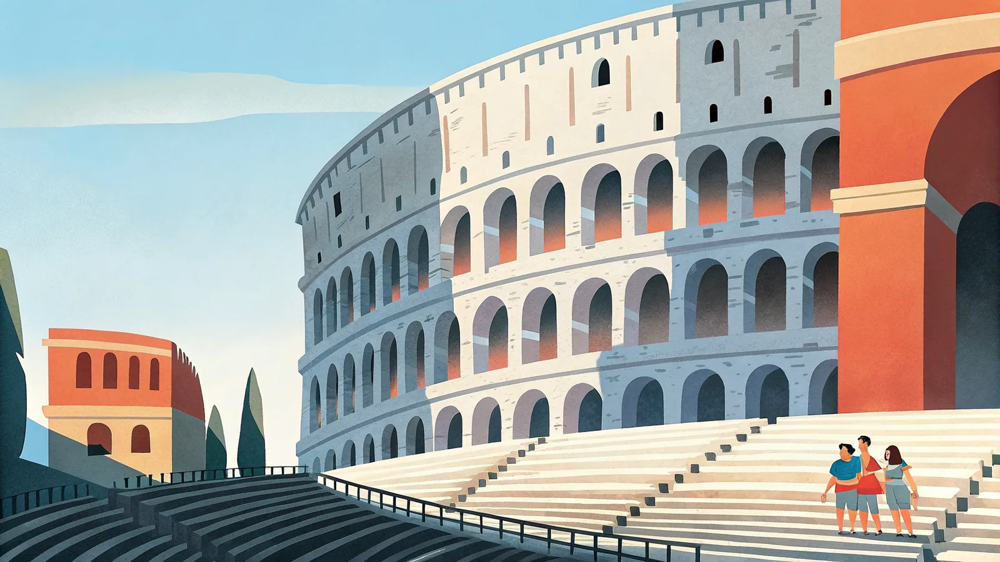
Googleマップ →イズミル・エフェソス
エーゲ海に面した港町イズミルを拠点に、古代都市エフェソスの遺跡群や陶器の村シリンジェへ足を延ばせるエリア
アクセス
イスタンブールから国内線でイズミル空港まで約1時間
おすすめ時期
4〜6月・9〜10月
宿泊エリア
セルチュク（エフェソス観光の拠点） / イズミル市街
⭐
IZM 01
エフェソス古代遺跡（ケルスス図書館）
世界遺産級の古代都市古代地中海世界屈指の規模を誇る都市遺跡。2階建てのケルスス図書館のファサードは、トルコ観光を象徴する光景のひとつ。
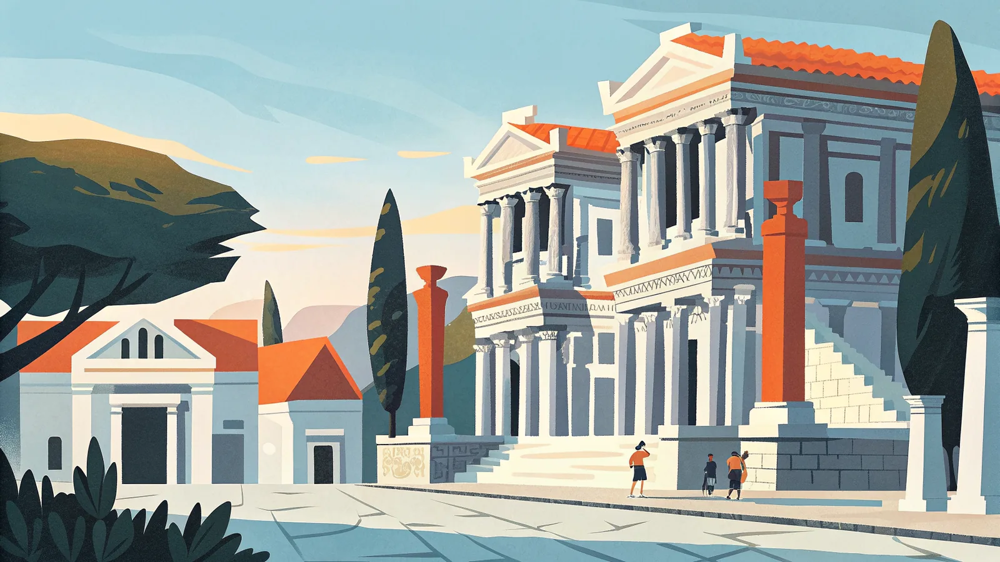
Googleマップ →IZM 03
シリンジェ村
ワインと陶器の村ワイン造りと陶器で知られる、丘の斜面に石造りの家々が連なる小さな村。エフェソス観光の合間に立ち寄りやすい。
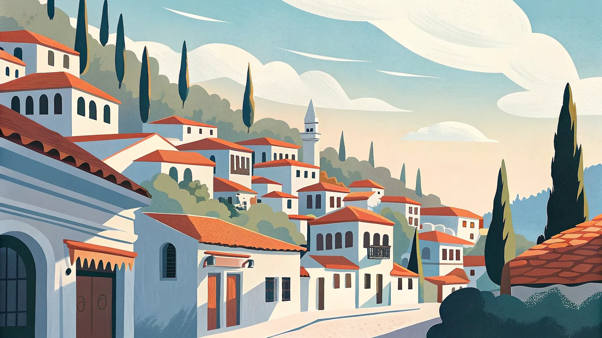
Googleマップ →IZM 04
コナック広場・時計塔
イズミルのシンボルイズミルの街のシンボルである時計塔が立つ広場。海沿いの遊歩道が続き、地元の人々の憩いの場としても親しまれている。
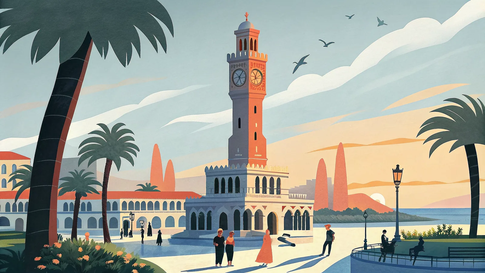
Googleマップ →観光地が決まったら名物グルメもチェック！
各都市の名物料理から定番スイーツ・ドリンクまで。
食べてみたいものをここで探して旅の計画に加えよう。